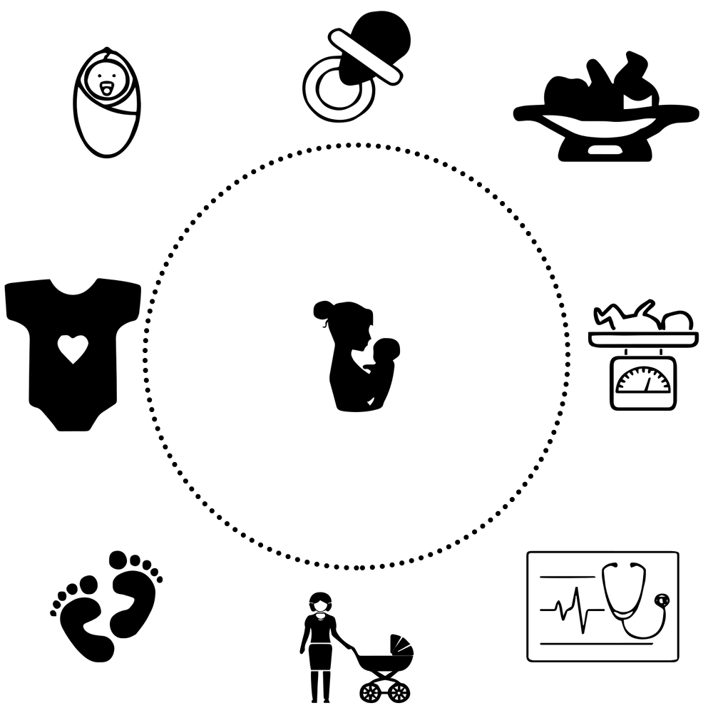

👶 Suivez l'évolution de votre bébé au fil des étapes, de l'ovulation, en passant par le test de grossesse, la première échographie, la découverte du sexe et jusqu'à l'accouchement.
Chaqu'une d'elle est importante et mérite une attention particulière.
Notre application vous aide à y voir plus clair, à vous organiser pour ne rien oublier mais également à conserver
ces souvenirs qui seront tous uniques. Grâce à elle, chacun des parents pourra consulter, ajouter ou modifier les informations quand il le souhaite.
Papa n'a pas pu assister à l'échograpghie ? Heureusement, grâce à Baby Boom, Maman peut charger directement la photo dans le suivi de bébé et Papa pourra la regarder quand il le voudra !

Son suivi ne devrait pas s'arrêter à son simple développement dans le ventre de Maman ! Avec Baby Boom, vous pouvez immortaliser chaque instant, sa première visite chez le pédiatre,
sa première exploration du monde qui l'entoure, ses premiers pas ou ses premiers mots 🥰
Parce que la sécurité de vos et le respect de la vie privée sont essentiels, toutes les données que vous enregistrez sont confidentielles et ne sont accessibles que par vous 😉